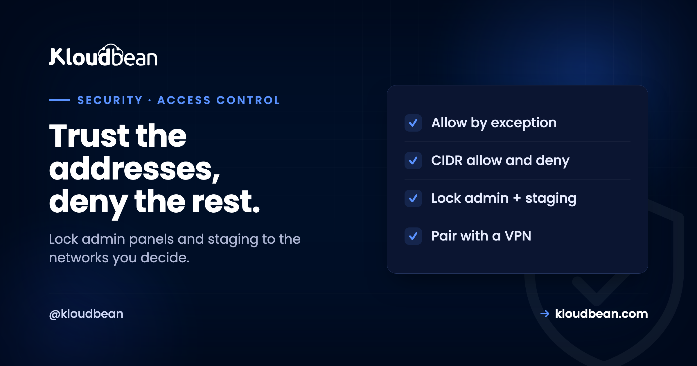

IP Allowlisting: Lock a Service to the Addresses You Trust

Some things should not be reachable by the whole internet. A database admin panel, a staging site, an internal dashboard, an API meant only for your office: exposing these to every address on earth is asking for trouble, no matter how good the password is. IP allowlisting is the oldest and bluntest answer, and often the right one. Instead of trusting anyone who knows the URL, you allow only the network addresses you decide, and deny the rest by default. It is not clever, and that is the point. A request from an address you did not permit never gets far enough to matter.
IP allowlisting (also called IP access control) restricts who can reach a service based on their network address. You define allow rules for the addresses or ranges you trust and deny everything else, or the reverse, block specific bad actors and allow the rest. Ranges are written in CIDR notation, like 203.0.113.0/24 for a whole block. It is ideal for admin panels, staging environments, internal tools, and APIs that only need to be reached from known places. Its blind spot is that addresses can change or be spoofed in some contexts, and users on dynamic or mobile connections are hard to pin down, so it is a strong layer rather than a complete authentication system. On Kloudbean, IP Access Control lets you set allow and deny rules, including CIDR ranges, on your services.
What allowlisting actually does
It answers one question before any other security check runs: is this address allowed to be here at all?
With an allowlist, you name the addresses or ranges permitted to reach a service and deny everything else by default. A request from a permitted address proceeds to the normal login and application logic; a request from anywhere else is refused at the door, before it touches your app. The opposite pattern, a denylist, allows everyone except specific addresses you block, which is useful for shutting out a known abuser but far weaker as a general posture, because it defaults to open. For anything sensitive, allow-by-exception (deny all, permit a few) is the strong default, and denylisting is a targeted tool for specific problems.
Addresses and ranges are written in CIDR notation. A single address might be 203.0.113.10/32, and a whole block your office owns might be 203.0.113.0/24, which covers 256 addresses. CIDR is just a compact way to say "this address" or "this range of addresses," and it is the vocabulary every allowlist speaks.
Where it shines
Allowlisting is at its best when a service has a small, known set of legitimate callers. That describes more of your infrastructure than you might think.
Admin panels and dashboards. The WordPress admin, a database GUI, an internal metrics dashboard: none of these need to accept connections from the entire planet. Restricting them to your office and VPN ranges removes them from the attack surface almost entirely. Staging and pre-production. A staging site should be seen by your team and your client, not indexed by search engines or poked by bots; an allowlist keeps it genuinely private. Internal and partner APIs. If an API is only ever called by your own servers or a known partner, allowlisting their addresses means a leaked key alone is not enough to use it from somewhere else. Administrative ports. Access like SSH is far safer limited to known addresses than open to all. In each case the logic is the same: the legitimate callers are few and known, so everything else is noise you can safely refuse.
The cleanest example of that is a database, because it has exactly one legitimate caller: your app server. On Kloudbean's managed databases you whitelist the application server's IP under IP Access Control and everything else is refused, so a leaked connection string is useless from a laptop in another country. That's the pattern to copy even on a self-run database. One allow rule, one address, nothing else. Note the framing carefully though: the database is locked down by that rule, not hidden. It still has a public endpoint, and the allowlist is what makes the endpoint boring.
Where it falls short (so you don't over-trust it)
Allowlisting is a strong layer, not a magic one, and the failure modes are worth knowing before you lean on it too hard.
The biggest limitation is practical: addresses change. Home and mobile connections often have dynamic IPs that shift without warning, so allowlisting a remote worker's home address is fragile and allowlisting a phone on mobile data is close to impossible. That is why allowlisting pairs so naturally with a VPN: your people connect to the VPN from wherever they are, and you allowlist the VPN's stable address rather than chasing each person's changing one. Worth knowing where that option lives on a managed platform, because it changes what you can do on a given plan. On Kloudbean, VPN and private networking are Enterprise features, so on a standard plan the stable address you allowlist is usually a server you already run, most often your own app server, rather than a VPN endpoint. The second limitation is conceptual: an allowed address is not an authenticated user. Anyone on an allowlisted network reaches the service, so if your office network is shared or compromised, the allowlist waves them through. Treat it as "reduce who can knock," not "prove who you are." Because of both, allowlisting belongs alongside real authentication and the other layers, never as the only lock on the door.
Using it without locking yourself out
The classic self-inflicted wound with allowlisting is banning your own access, so a little care saves a lot of panic.
Before you switch a service to deny-by-default, be certain your own current address, or better your VPN range, is on the allow list, and know how you would get back in if you got it wrong, for example through a console the allowlist does not gate. Prefer allowlisting stable ranges (a VPN, an office block) over individual dynamic addresses you will be updating forever. Keep the list documented, because an unexplained CIDR range six months from now is a small mystery nobody enjoys. Where the rules live matters more than people expect here: on Kloudbean the allow and deny rules are dashboard settings, so undoing a rule that locked you out is a click rather than a race to reach a firewall on a box you can no longer SSH into. If you're editing iptables by hand, open a second session and keep it open before you commit the rule. And review it periodically: addresses you trusted for a contractor or an old office should come off when they are no longer needed, the same discipline as revoking any other access.
What an allowlist stops, and who owns everything it doesn't
The reason allowlists get over-trusted is that they feel decisive. A rule went in, traffic stopped, job done. So here's the same threat list split by who actually has to solve each one, because the column on the right is where the real work lives.
| The threat | Does an allowlist stop it? | Who owns it |
|---|---|---|
| Bots scanning for an exposed admin panel | Yes, completely. They never reach the login form. | Your network config. One rule. |
| A leaked database connection string | Yes, if only the app server's IP is allowed. | Your network config, plus rotating the credential anyway. |
| Credential stuffing against your login | Only from outside the allowed range. | Your app. Rate limiting, MFA, password rules. |
| A stolen laptop on your allowlisted office network | No. The address is trusted, so the attacker is too. | Your app's authentication and session handling. |
| SQL injection or a broken authorisation check | No. The request arrives from an allowed address and runs. | Your code. Nothing at the network layer sees it. |
| Brute-force SSH noise | Yes for unknown addresses; the host firewall and Fail2ban handle the rest. | Shared: your rules plus the baseline hardening on the server. |
| A contractor who left six months ago | Only if you removed their range. | You. This is a review habit, not a feature. |
Three of those rows no host fixes, ours included. A broken authorisation check, a session that never expires, an injection hole: those ship in your code, and every request from your own allowlisted office will sail straight through to them. A platform can give you the rules and keep the firewall underneath sane. It can't decide whether the logged-in user should be allowed to read that record.
What a platform can remove is the friction that makes people skip allowlisting in the first place. Kloudbean's IP Access Control takes allow and deny rules with CIDR ranges as dashboard settings, on top of the Shorewall and Fail2ban baseline every server runs, so locking a staging site or a database down is a small settings change rather than a firewall project you keep postponing. That last part matters more than it sounds. The most common reason a database is open to the internet isn't that someone decided it should be.
Once IP Allowlisting is settled
Allowlisting is one access control among several. To gate an app behind a password prompt instead of, or alongside, an address rule, the Basic Auth gate guide. For the host firewall underneath, Fail2ban and Shorewall; for the application layer, what a WAF does. To keep a service off the public internet entirely, what a VPC is. And the overview that ties the layers together is secure and compliant hosting.
One dashboard for the whole stack.
Servers, managed databases, object storage, and a built-in load balancer live behind one login, on the cloud and region you pick. The stack, SSL, patching, and backups are handled for you.
- ✓ Seven cloud providers
- ✓ Managed databases
- ✓ Object storage
- ✓ Automatic backups
- ✓ Free SSL
- ✓ Git deploy
- ✓ Free migration assistance
FAQ
What is the difference between an allowlist and a denylist?
An allowlist permits only the addresses you name and denies everything else by default, which is the strong posture for sensitive services because it fails closed. A denylist allows everyone except specific addresses you block, which defaults to open and is best used for shutting out a known bad actor rather than as a general control. For admin panels and internal tools, allow-by-exception is the safer choice.
What is CIDR notation?
CIDR is a compact way to write an address or a range of addresses. A suffix like /32 means a single address, while /24 covers a block of 256 addresses, so 203.0.113.0/24 is a whole small network. Allowlists use CIDR to permit either one exact address or an entire range, such as your office block or a VPN, in a single rule.
Can IP allowlisting be bypassed?
It is strong but not absolute. Addresses can be spoofed in some network contexts, an allowlisted network that is itself compromised will pass an attacker through, and it does not authenticate the individual behind an allowed address. That is why allowlisting is a layer rather than a complete control: it dramatically reduces who can reach a service, but it should sit alongside real authentication rather than replace it.
How do I allowlist a remote worker on a dynamic IP?
Usually you do not allowlist their changing home or mobile address directly, because it shifts. Instead you put them on a VPN and allowlist the VPN's stable address. They connect to the VPN from wherever they are, and the service sees a single trusted address regardless of their actual location. This is the standard pattern for combining allowlisting with a mobile workforce.
What should I IP allowlist?
Anything with a small, known set of legitimate callers: admin panels and dashboards, staging and pre-production environments, internal or partner APIs, and administrative access like SSH. These do not need to accept connections from the whole internet, so restricting them to your office and VPN ranges removes them from most of the attack surface for very little effort.
Will IP allowlisting lock me out?
It can if you are careless, which is the most common mistake with it. Before switching a service to deny-by-default, make sure your own current address or VPN range is allowed, and know a fallback way in, such as a console that the allowlist does not gate. Prefer allowlisting stable ranges over individual dynamic addresses, and review the list periodically so stale entries do not linger.
Is IP allowlisting the same as a firewall?
They are closely related. A host firewall decides which ports are open at all, while IP allowlisting decides which addresses may reach a given service or port. In practice allowlisting is often implemented as firewall or access-control rules, and the two work together: the firewall closes unused doors, and allowlisting restricts who may use the ones that remain open.
Does Kloudbean support IP allowlisting?
Yes. Kloudbean's IP Access Control lets you set allow and deny rules, including CIDR ranges, to control which addresses can reach your services. That gives you an allow-by-exception posture for admin surfaces and staging without editing raw firewall rules, on top of the Shorewall and Fail2ban baseline every server runs. On Enterprise plans, private networking (a VPC) is also available for services that should not be public at all.